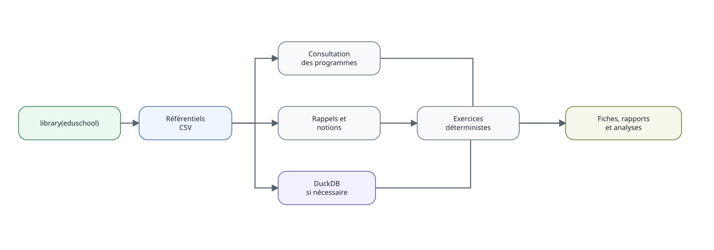

Prise en main de eduschool
prise-en-main.Rmd
Du référentiel à une fiche de révision
Objectif
Cette vignette présente le chemin le plus court pour utiliser le package. Les articles consacrés à la 6e et à la 2de montrent ensuite des usages plus complets.
library(eduschool)
niveaux()
genere_resume("6E")
genere_resume("2GT", matiere = "maths")Passer du programme à une notion
capacites("6E", discipline_id = "MAT", version_id = "2026_2027")
notions_capacite("ITM_MAT_C3_6E_C09")
cat(obtenir_rappel("MAT_FRACTION_ADD"))Les fonctions themes_niveau(),
notions_niveau() et resume_niveau() donnent
accès aux tables plus détaillées lorsque la synthèse de
genere_resume() ne suffit plus.
Produire une fiche de révision
generer_fiche("6E", "ITM_MAT_C3_6E_C09", n = 5, seed = 2026) |>
produire_fiche(format = "auto")Le nom de sortie est automatique. format = "auto"
choisit un PDF lorsque LaTeX est disponible et un HTML sinon. Un nom
explicite reste possible :
generer_fiche("6E", "ITM_MAT_C3_6E_C09", n = 5, seed = 2026) |>
produire_fiche(fichier = "ma_fiche", format = "html")DuckDB seulement si nécessaire
Les consultations usuelles lisent directement les ressources du package. La couche DuckDB reste disponible pour les requêtes relationnelles plus libres.
con = ouvrir_base()
DBI::dbListTables(con)
DBI::dbDisconnect(con)